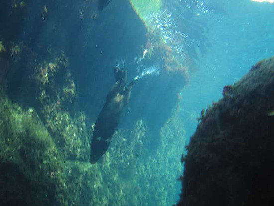

Loutre de mer ou loutre maritime ?
Les noms portent à confusion.
La loutre de mer et les loutres maritimes sont deux espèces distinctes.
La loutre maritime (lutra felina), également appelée "Chat des côtes chiliennes".
Elle ne s'aventure pas en mer comme sa cousine, la loutre de mer (Enhydra lutris).